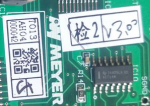
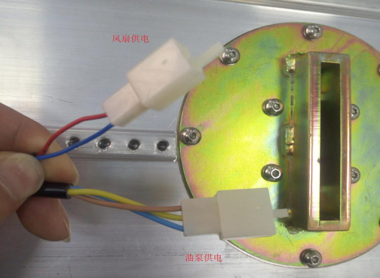
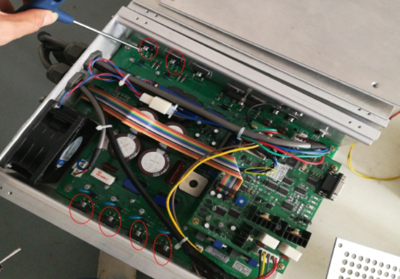
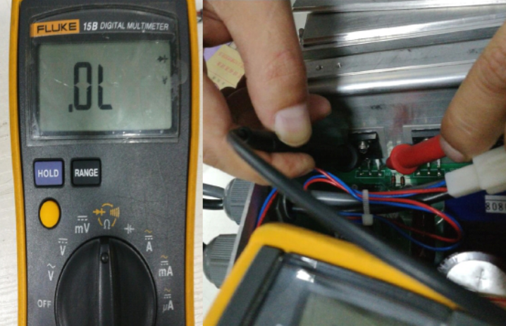
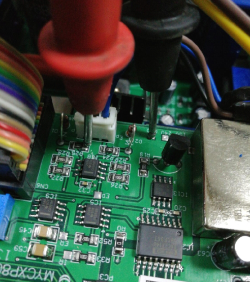

情况一：提示射源通讯异常
解决方法：
（1）检查射源输入电220V是否正常， 检查射源通讯线是否有松动（DB9）接头是否松动；如下图：

（2）若射源偶尔报通讯异常但射源能够开启，请检查射源控制板程序是否为3.0版本，需要重新烧录程序。

情况二：提示温度异常
解决方法：
（1）刚开机时就报温度异常报警时：（1）检查急停按钮是否被按下（2）检查射源控制盒上的2芯黄线接插件是否与整机对接。
（2）使用一段时间后提示温度异常报警时：（1）检查空调是否制冷（2）检查射源油箱上给泵和风扇供电的两个接插件是否接触良好，并测量给风扇供电的接插件电压是否为24VDC，油泵接插件电压是否为220VAC。如下图：

（3）若以上检查都正常时，可以确定油泵故障，用手感受油箱表面温度，直接更换油泵

情况三：射源无法开启
解决方法：
（1）射源控制盒内部有绿色指示灯亮，开启射源后，电压正常，电流值为0，射源控制板故障（品号55023825），需更换全套射源；
（2）射源控制盒内部有绿色指示灯亮，开启射源后无整机三色灯黄灯闪烁，4秒后变为绿灯闪烁，无故障提示，开启射源过程中电压电流一直为0，检查射源控制盒内部彩排线是否松动，若重新插拔不能解决此问题，更换射源控制板（品号55023825）。
（3）射源控制盒内部无绿色指示灯亮，拆开射源控制盒检查保险丝F1（6A）是否损坏。如下图

（4）射源控制盒内部无绿色指示灯亮,检查控制盒内所有电路板上有无明显烧坏的痕迹。

（5）射源控制盒内部无绿色指示灯亮,检查主电路板（控制盒内下层较大的那块电路板）上6只IGBT器件Q1～Q6的好坏，位置如上图所示。

（6）如上图所示将万用表调至二极管挡（不同表会有差异），然后面对被测器件，把万用表红笔放在器件的第三脚（从左向右），黑笔放第二脚，分别测量六只器件，正确结果应当是0.35V～0.45V，结果为0时则器件损坏。

（7）检查控制板（控制板内上层较小的电路板）上的反馈电阻的阻值是否正常，测试位置如上图所示，将万用表调至欧姆档，黑笔放控制板GND焊盘上，红笔放电阻R25右侧，测量结果正常应该是1K欧姆正负1%,超出该范围说明反馈电阻有异常。
若不能解决此问题，则全套更换射源（品号53008938）。
如对以上有所疑问，可以企业微信联系张锋或李力。